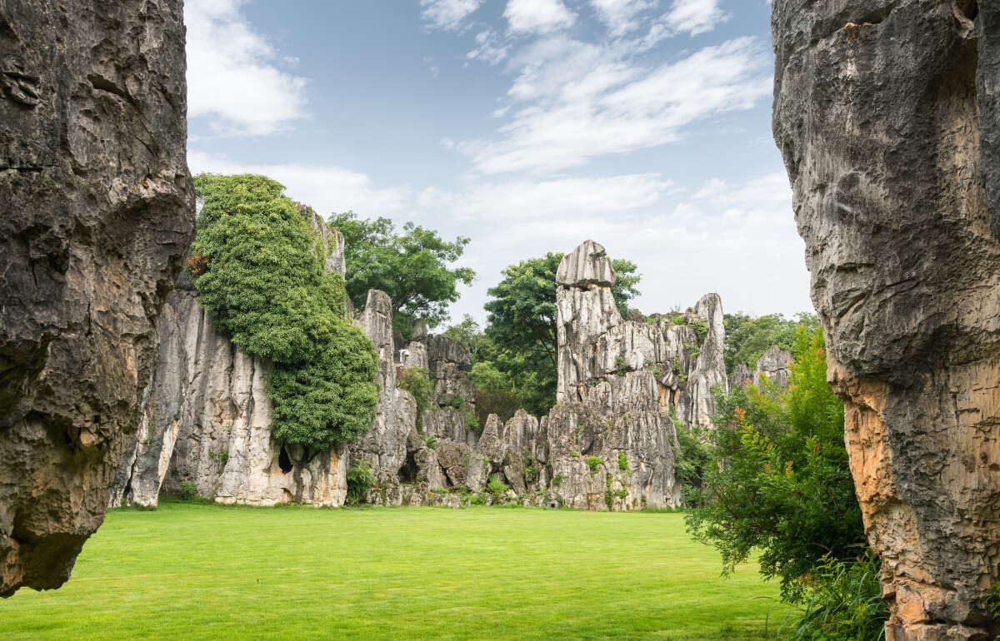
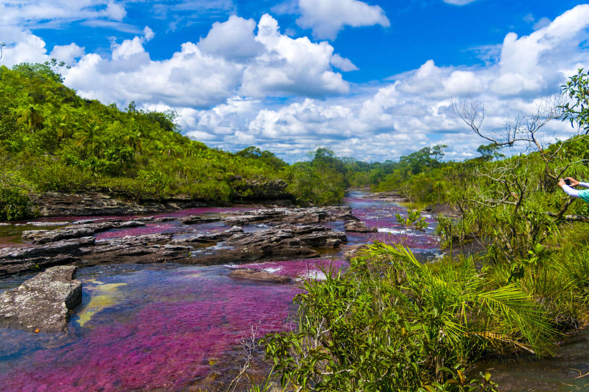

========================================================================
Coyotte Buttes is a beautiful area located in a section of the Paria Canyon-Vermilion Cliffs Wilderness.
Localized mostly in Utah and slightly in Arizona, It is managed by the Bureau of Land Management. Visiting
this location will allow you to see amazing sandstone crests, as you find youself surrounded by multicolored
rocks. You may even be able to find evidence of dinosaurs! This location is home to a phenomenon known as
trample surface. This mean that thousands of dinosaurs passed through the location and evidence of there
steps is still very pronounced.
========================================================================
=======================================================================
Said to be so wonderful that it is a "Spiritual Experience", the Marble Cathedral of Chile will present you
with an awe-inspiring natural wonder. The Marble Cathedral is actually a series of caves, given its name due
to the amazing colors and reflections created by the cave. The structure is only accessible by boat and
several of the caverns are actually underwater. With the absurdly-blue water and the strangely reflective rock,
this location is most definitely a sight to behold.
=======================================================================
=======================================================================
The Stone Forest or Shilin is a "forest" of massive limestone formations. Located a short distance away from
the provincial capital Kunming, the forest is a tourist attraction for individuals who wish to travel through
the massive formations. Also, the stone forest covers about 150 square miles, with most of the limestone believed
to be over 270 million years old!
=======================================================================

=======================================================================
Cano Cristales, a river in Colombian national park, presents its visitors with what has been called the most
beautiful river in the world. The river, with clear water, has a bright red color to it with some yellow due
to the algae that grows within. This results in an appearance unlike any other river! However, the algae
specifically grows from July to October, so be sure to visit in those months. Besides the river, the area around
it is also great to visit. Within the national park, you will see incredible rock formations, savannahs, and wildlife.
=======================================================================
